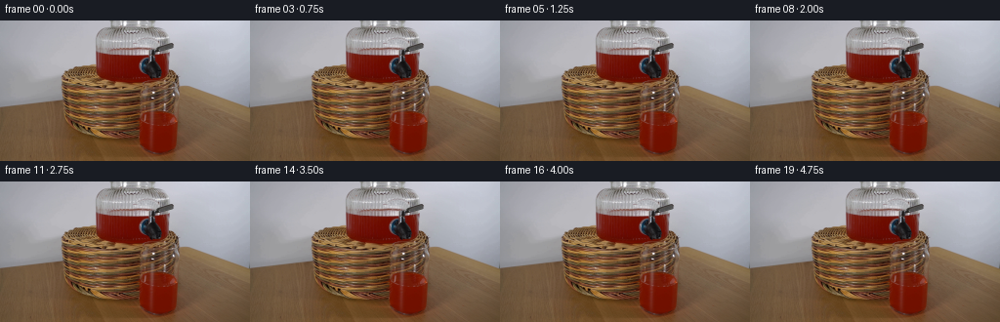
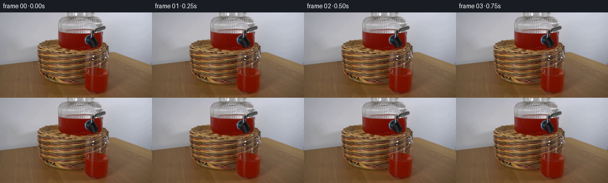
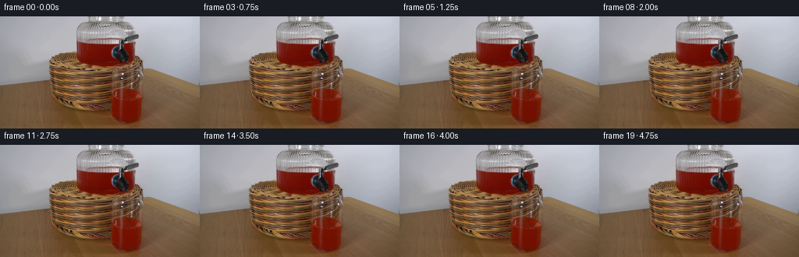
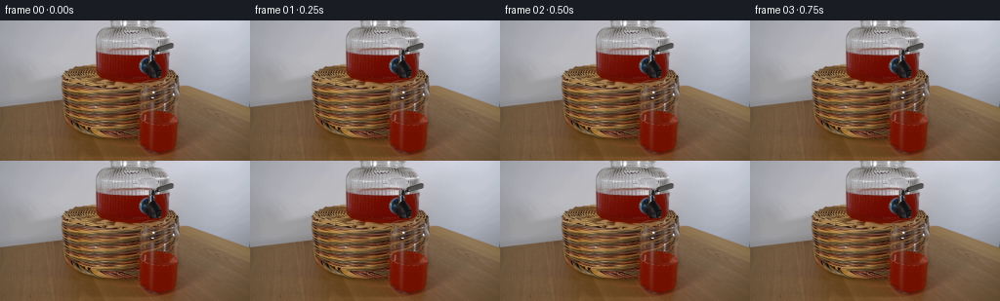

CODING AGENTS AS PIXEL WORLD MODELS
traex/DeepSeek-V4.1-Flash · 0067
点击播放 · 原生 RGB 像素
逐轮保存的候选
回放视频、检查图与代码变化。
每份候选均可单独播放。实际图片检查记录在下方工具轨迹中。
候选 01播放与检查图
点击播放 · 原生 RGB 像素


展开代码变化
--- 上一保存版本
+++ 本次保存版本
@@ -0,0 +1,171 @@
+from pathlib import Path
+
+import cv2
+import numpy as np
+from PIL import Image
+from scipy import ndimage
+
+import artifact_io
+
+
+ROOT = Path(__file__).resolve().parent
+FRAMES = 20
+FPS = 4
+
+
+def _red_mask(rgb, bounds, red_delta, min_red):
+ x0, y0, x1, y1 = bounds
+ r = rgb[:, :, 0].astype(np.int16)
+ g = rgb[:, :, 1].astype(np.int16)
+ b = rgb[:, :, 2].astype(np.int16)
+ seed = (r > min_red) & (r - g > red_delta) & (r - b > red_delta)
+ region = np.zeros(seed.shape, dtype=np.uint8)
+ region[y0:y1, x0:x1] = 1
+ seed &= region.astype(bool)
+
+ joined = ndimage.binary_closing(seed, structure=np.ones((3, 3)), iterations=1)
+ joined = ndimage.binary_fill_holes(joined)
+ joined &= region.astype(bool)
+ return joined.astype(np.float32)
+
+
+def _interior_weight(mask, feather=1.6):
+ distance = ndimage.distance_transform_edt(mask > 0.5)
+ weight = np.clip(distance / feather, 0.0, 1.0)
+ weight = ndimage.gaussian_filter(weight, 0.65)
+ return weight.astype(np.float32)
+
+
+def _fluid_motion(frame, mask, weight, t, amplitude, phase):
+ h, w = frame.shape[:2]
+ yy, xx = np.mgrid[0:h, 0:w].astype(np.float32)
+ drift = np.sin(np.pi * min(t / 0.45, 1.0))
+
+ dx = amplitude * drift * (
+ 0.65 * np.sin(2.0 * np.pi * (yy / 19.0 - 0.34 * t) + phase)
+ + 0.35 * np.sin(2.0 * np.pi * (xx / 37.0 + 0.23 * t) + 1.7 * phase)
+ )
+ dy = 0.42 * amplitude * drift * (
+ np.sin(2.0 * np.pi * (xx / 31.0 + 0.27 * t) + 0.6 * phase)
+ + 0.35 * np.cos(2.0 * np.pi * (yy / 23.0 - 0.19 * t))
+ )
+ dx *= weight
+ dy *= weight
+
+ moved = cv2.remap(
+ frame,
+ np.ascontiguousarray(xx + dx, dtype=np.float32),
+ np.ascontiguousarray(yy + dy, dtype=np.float32),
+ interpolation=cv2.INTER_LINEAR,
+ borderMode=cv2.BORDER_REFLECT_101,
+ )
+ return frame.astype(np.float32) * (1.0 - weight[:, :, None]) + moved.astype(
+ np.float32
+ ) * weight[:, :, None]
+
+
+def _surface_ripple(image, mask, t, phase, y_surface, amplitude, strength):
+ h, w = image.shape[:2]
+ yy, xx = np.mgrid[0:h, 0:w].astype(np.float32)
+ phase_wave = (
+ 2.0 * np.pi * ((xx - 138.0) / 25.0 - 0.62 * t) + phase
+ + 0.65 * np.sin(2.0 * np.pi * (xx / 41.0 + 0.19 * t))
+ )
+ center = y_surface + amplitude * np.sin(phase_wave)
+ band = np.exp(-0.5 * ((yy - center) / 0.78) ** 2)
+ band *= mask * np.clip((xx - 137.0) / 8.0, 0.0, 1.0)
+ band *= np.clip((185.0 - xx) / 8.0, 0.0, 1.0)
+ modulation = strength * np.sin(phase_wave + 0.9)
+ tint = np.array([1.0, 0.32, 0.20], dtype=np.float32)
+ return image + band[:, :, None] * modulation[:, :, None] * tint
+
+
+def _add_bubble(image, mask, x, y, radius, alpha):
+ h, w = image.shape[:2]
+ if not (0 <= x < w and 0 <= y < h):
+ return image
+ yy, xx = np.mgrid[0:h, 0:w].astype(np.float32)
+ ellipse = ((xx - x) / max(radius, 0.55)) ** 2 + ((yy - y) / max(radius * 0.78, 0.45)) ** 2
+ body = np.clip(1.0 - ellipse, 0.0, 1.0) ** 0.55
+ rim = np.exp(-0.5 * ((np.sqrt(ellipse + 1e-6) - 0.78) / 0.17) ** 2)
+ local_alpha = alpha * body * mask
+ glow = (1.7 * body + 1.1 * rim) * local_alpha
+ color = np.array([1.0, 0.50, 0.33], dtype=np.float32)
+ return image + glow[:, :, None] * color
+
+
+def _soft_vignette(image):
+ h, w = image.shape[:2]
+ yy, xx = np.mgrid[0:h, 0:w].astype(np.float32)
+ nx = (xx - (w - 1) * 0.5) / ((w - 1) * 0.5)
+ ny = (yy - (h - 1) * 0.5) / ((h - 1) * 0.5)
+ falloff = np.clip((nx * nx + ny * ny - 0.60) / 1.05, 0.0, 1.0)
+ return image * (1.0 - 0.026 * falloff[:, :, None])
+
+
+def generate():
+ first = np.asarray(Image.open(ROOT / "first_frame.png").convert("RGB"))
+ if first.shape != (144, 256, 3):
+ raise ValueError(f"Unexpected first-frame shape: {first.shape}")
+
+ dispenser_seed = _red_mask(first, (58, 31, 188, 69), 44, 66)
+ glass_seed = _red_mask(first, (132, 89, 188, 141), 38, 64)
+
+ dispenser_mask = ndimage.gaussian_filter(dispenser_seed, 0.52)
+ glass_mask = ndimage.gaussian_filter(glass_seed, 0.48)
+ dispenser_weight = _interior_weight(dispenser_seed, 1.45)
+ glass_weight = _interior_weight(glass_seed, 1.25)
+
+ dispenser_bubbles = [
+ (116.0, 62.0, 23.0, 0.72, 0.0, 0.12),
+ (137.0, 57.0, 27.0, 0.66, 1.4, 0.10),
+ (166.0, 54.0, 21.0, 0.72, 2.2, 0.08),
+ (124.0, 48.0, 24.0, 0.58, 3.0, 0.09),
+ ]
+ glass_bubbles = [
+ (151.0, 124.0, 15.0, 0.60, 0.4, 0.08),
+ (169.0, 126.0, 17.0, 0.55, 2.1, 0.07),
+ (159.0, 111.0, 13.0, 0.48, 3.8, 0.06),
+ ]
+
+ frames = []
+ for index in range(FRAMES):
+ t = index / FPS
+ if index == 0:
+ frames.append(first.copy())
+ continue
+
+ image = first.astype(np.float32)
+ image = _fluid_motion(
+ image.astype(np.uint8), dispenser_mask, dispenser_weight, t, 1.05, 0.35
+ )
+ image = _fluid_motion(
+ image.astype(np.uint8), glass_mask, glass_weight, t, 0.72, 2.0
+ )
+
+ image = _surface_ripple(
+ image, glass_mask, t, 0.4, y_surface=94.1, amplitude=0.70, strength=2.7
+ )
+
+ for x0, y0, rise, radius, phase, alpha in dispenser_bubbles:
+ cycle = (t / 5.0 + phase) % 1.0
+ x = x0 + 0.9 * np.sin(2.0 * np.pi * cycle + phase)
+ y = y0 - rise * cycle
+ image = _add_bubble(image, dispenser_weight, x, y, radius, alpha)
+
+ for x0, y0, rise, radius, phase, alpha in glass_bubbles:
+ cycle = (t / 5.0 + phase) % 1.0
+ x = x0 + 0.7 * np.sin(2.0 * np.pi * cycle + phase)
+ y = y0 - rise * cycle
+ image = _add_bubble(image, glass_weight, x, y, radius, alpha)
+
+ image = _soft_vignette(image)
+ frames.append(np.clip(np.rint(image), 0, 255).astype(np.uint8))
+
+ frames = np.asarray(frames, dtype=np.uint8)
+ artifact_io.save(frames, ROOT)
+ return frames
+
+
+if __name__ == "__main__":
+ generate()
候选 02播放与检查图
点击播放 · 原生 RGB 像素


展开代码变化
--- 上一保存版本
+++ 本次保存版本
@@ -24,7 +24,6 @@
seed &= region.astype(bool)
joined = ndimage.binary_closing(seed, structure=np.ones((3, 3)), iterations=1)
- joined = ndimage.binary_fill_holes(joined)
joined &= region.astype(bool)
return joined.astype(np.float32)
@@ -39,7 +38,7 @@
def _fluid_motion(frame, mask, weight, t, amplitude, phase):
h, w = frame.shape[:2]
yy, xx = np.mgrid[0:h, 0:w].astype(np.float32)
- drift = np.sin(np.pi * min(t / 0.45, 1.0))
+ drift = np.sin(np.pi * t / 5.0)
dx = amplitude * drift * (
0.65 * np.sin(2.0 * np.pi * (yy / 19.0 - 0.34 * t) + phase)
@@ -94,15 +93,6 @@
return image + glow[:, :, None] * color
-def _soft_vignette(image):
- h, w = image.shape[:2]
- yy, xx = np.mgrid[0:h, 0:w].astype(np.float32)
- nx = (xx - (w - 1) * 0.5) / ((w - 1) * 0.5)
- ny = (yy - (h - 1) * 0.5) / ((h - 1) * 0.5)
- falloff = np.clip((nx * nx + ny * ny - 0.60) / 1.05, 0.0, 1.0)
- return image * (1.0 - 0.026 * falloff[:, :, None])
-
-
def generate():
first = np.asarray(Image.open(ROOT / "first_frame.png").convert("RGB"))
if first.shape != (144, 256, 3):
@@ -117,15 +107,16 @@
glass_weight = _interior_weight(glass_seed, 1.25)
dispenser_bubbles = [
- (116.0, 62.0, 23.0, 0.72, 0.0, 0.12),
- (137.0, 57.0, 27.0, 0.66, 1.4, 0.10),
- (166.0, 54.0, 21.0, 0.72, 2.2, 0.08),
- (124.0, 48.0, 24.0, 0.58, 3.0, 0.09),
+ (116.0, 61.0, 2.0, 1.7, 0.0, 0.16),
+ (137.0, 57.0, 2.4, 1.3, 1.4, 0.13),
+ (166.0, 54.0, 2.1, 1.8, 2.2, 0.12),
+ (124.0, 48.0, 2.7, 1.2, 3.0, 0.14),
+ (149.0, 52.0, 2.3, 1.5, 4.2, 0.10),
]
glass_bubbles = [
- (151.0, 124.0, 15.0, 0.60, 0.4, 0.08),
- (169.0, 126.0, 17.0, 0.55, 2.1, 0.07),
- (159.0, 111.0, 13.0, 0.48, 3.8, 0.06),
+ (151.0, 124.0, 1.8, 1.2, 0.4, 0.12),
+ (169.0, 126.0, 1.6, 1.4, 2.1, 0.10),
+ (159.0, 111.0, 1.4, 1.0, 3.8, 0.09),
]
frames = []
@@ -137,14 +128,14 @@
image = first.astype(np.float32)
image = _fluid_motion(
- image.astype(np.uint8), dispenser_mask, dispenser_weight, t, 1.05, 0.35
+ image.astype(np.uint8), dispenser_mask, dispenser_weight, t, 0.82, 0.35
)
image = _fluid_motion(
- image.astype(np.uint8), glass_mask, glass_weight, t, 0.72, 2.0
+ image.astype(np.uint8), glass_mask, glass_weight, t, 0.52, 2.0
)
image = _surface_ripple(
- image, glass_mask, t, 0.4, y_surface=94.1, amplitude=0.70, strength=2.7
+ image, glass_mask, t, 0.4, y_surface=94.1, amplitude=0.48, strength=1.8
)
for x0, y0, rise, radius, phase, alpha in dispenser_bubbles:
@@ -159,7 +150,6 @@
y = y0 - rise * cycle
image = _add_bubble(image, glass_weight, x, y, radius, alpha)
- image = _soft_vignette(image)
frames.append(np.clip(np.rint(image), 0, 255).astype(np.uint8))
frames = np.asarray(frames, dtype=np.uint8)
可观测工具轨迹
实际执行的命令与返回图片。
命令 1exit 0
/bin/bash -c "pwd && rg --files -g 'prompt.txt' -g 'GENERATION_RULES.md' -g 'first_frame.png' -g '"'!node_modules'"'"
命令 2exit 0
/bin/bash -c 'ls -lah'
命令 3exit 0
/bin/bash -c 'git status --short --branch'
命令 4exit 0
/bin/bash -c 'cat prompt.txt'
命令 5exit 0
/bin/bash -c 'cat GENERATION_RULES.md'
命令 6exit 0
/bin/bash -c "sed -n '1,240p' artifact_io.py && printf '\\n---PLAYER---\\n' && sed -n '1,260p' player_template.html"
命令 7exit 0
/bin/bash -c "python - <<'PY'
from PIL import Image
import numpy as np
im=Image.open('first_frame.png').convert('RGB')
a=np.array(im)
print('size', im.size, 'shape', a.shape)
print('overall min/max/mean/std', a.min((0,1)), a.max((0,1)), a.mean((0,1)).round(2), a.std((0,1)).round(2))
# representative quantized palette
q=(a//32)*32
u,c=np.unique(q.reshape(-1,3),axis=0,return_counts=True)
for i in np.argsort(c)[-25:][::-1]: print(tuple(u[i]), int(c[i]))
PY"命令 8exit 0
/bin/bash -c "python - <<'PY'
from PIL import Image
import numpy as np
im=np.array(Image.open('first_frame.png').convert('RGB'))
# ascii luminance 128x72, preserve aspect via 2 chars each sample
chars=' .:-=+*#%@'
for y in range(0,144,2):
line=''
for x in range(0,256,2):
b=im[y:y+2,x:x+2].mean((0,1))
lum=.2126*b[0]+.7152*b[1]+.0722*b[2]
line += chars[min(9,int(lum/256*10))]
print(line)
PY"命令 9exit 0
/bin/bash -c "python - <<'PY'
from PIL import Image
import numpy as np
from scipy import ndimage
im=np.array(Image.open('first_frame.png').convert('RGB'))
r,g,b=im.transpose(2,0,1).astype(float)
# red saturated
mask=(r>max(50,g*1.25),)[0] if False else (r>50)&(r>g*1.3)&(r>b*1.3)&((r-g)>20)
lab,n=ndimage.label(mask)
sizes=ndimage.sum(mask,lab,range(1,n+1))
print('red pixels',mask.sum(),'components',n)
for i in np.argsort(sizes)[-20:][::-1]:
y,x=np.where(lab==i+1)
print(int(sizes[i]), 'bbox', (x.min(),y.min(),x.max(),y.max()),'meanRGB',im[y,x].mean(0).round(1))
# rows and cols counts red
print('row red counts:')
for y,c in enumerate(mask.sum(1)):
if c: print(y,int(c))
print('col red ranges:')
for x,c in enumerate(mask.sum(0)):
if c>5: print(x,int(c))
PY"命令 10exit 0
/bin/bash -c "python - <<'PY'
from PIL import Image
im=Image.open('first_frame.png').convert('RGB')
# Nearest-neighbor 4x for closer inspection through image reader
im.resize((1024,576),Image.Resampling.NEAREST).save('.tmp/first_4x.png')
PY"命令 11exit 0
/bin/bash -c "python - <<'PY'
from PIL import Image
import numpy as np
from scipy import ndimage
im=np.array(Image.open('first_frame.png').convert('RGB')).astype(float)
r,g,b=im.transpose(2,0,1)
chroma=r-np.maximum(g,b)
for t in [10,20,30,40,50,70,90,110,130]:
m=chroma>t
ys,xs=np.where(m)
print('t',t,'n',len(xs),'bbox',(xs.min(),ys.min(),xs.max(),ys.max()) if len(xs) else None)
# top chroma pixels
idx=np.dstack(np.unravel_index(np.argsort(chroma.ravel())[-20:],chroma.shape))[0]
for y,x in idx[::-1]: print((x,y),im[y,x].astype(int).tolist(),round(chroma[y,x],1))
PY"命令 12exit 0
/bin/bash -c "python - <<'PY'
from PIL import Image
import numpy as np
from scipy import ndimage
a=np.array(Image.open('first_frame.png').convert('RGB')).astype(float)
r,g,b=a.transpose(2,0,1)
# print strong red runs by rows 25-143 every 2
for y in range(25,144,2):
m=(r[y]-g[y]>40)&(r[y]-b[y]>40)&(r[y]>55)
runs=[]; st=None
for x,v in enumerate(np.r_[m,False]):
if v and st is None: st=x
if not v and st is not None:
if x-st>=2:runs.append((st,x-1))
st=None
print(f'{y:3}',runs)
PY"命令 13exit 0
/bin/bash -c "python - <<'PY'
from PIL import Image
import numpy as np
a=np.array(Image.open('first_frame.png').convert('RGB'))
# report grid pixel colors at key zones (means)
for name,box in [('dispenser',(95,32,185,122)),('glass',(138,90,183,140)),('basket',(40,110,235,144)),('bg',(0,0,70,100)),('spout',(98,57,112,82))]:
x0,y0,x1,y1=box; z=a[y0:y1,x0:x1].reshape(-1,3)
print(name, 'mean',z.mean(0).round(1),'median',np.median(z,0).astype(int),'q10',np.percentile(z,10,axis=0).astype(int),'q90',np.percentile(z,90,axis=0).astype(int))
# scanline representative exact RGB every 8 pixels
for y in [20,35,50,65,80,95,110,120,130,140]:
print('y',y)
for x in range(0,256,16):
print(x,tuple(a[y,x]),end='; ')
print()
PY"命令 14exit 0
/bin/bash -c "python - <<'PY'
from PIL import Image
import numpy as np
a=np.array(Image.open('first_frame.png').convert('RGB'))
# key crop, sample every 2 px and output rgb hex grid for x=90..190, y=28..143, at 4px x 4px
for y in range(28,144,4):
line=[]
for x in range(88,192,4):
p=a[y:y+4,x:x+4].mean((0,1)).astype(int)
line.append('%02x%02x%02x'%tuple(p))
print(f'{y:3}', ' '.join(line))
PY"命令 15exit 0
/bin/bash -c "python - <<'PY'
from PIL import Image
import numpy as np
a=np.array(Image.open('first_frame.png').convert('RGB'))
# print key crop color-coded ascii: R=red, r=brown, G=glass grey, .=bg, W=white, K=black, *=mid
def cl(p):
r,g,b=map(int,p); mx=max(r,g,b); mn=min(r,g,b)
if r>g+50 and r>b+50: return 'R'
if r>g+20 and g>b+15 and r<170: return 'r'
if mx<45:return 'K'
if mx>195:return 'W'
if mx<80:return 'k'
if r>g+10 and r>b+10:return 'b'
if abs(r-g)<12 and abs(g-b)<18:return 'G'
return '.'
for y in range(24,144,2):
print(f'{y:3}', ''.join(cl(a[y,x]) for x in range(48,224,2)))
PY"命令 16exit 0
/bin/bash -c "python - <<'PY'
import cv2, numpy as np
from PIL import Image
im=np.array(Image.open('first_frame.png').convert('RGB'))
g=cv2.cvtColor(im,cv2.COLOR_RGB2GRAY)
for th1,th2 in [(30,90),(50,130)]:
e=cv2.Canny(g,th1,th2)
cs,_=cv2.findContours(e,cv2.RETR_LIST,cv2.CHAIN_APPROX_SIMPLE)
arr=[]
for c in cs:
x,y,w,h=cv2.boundingRect(c); area=cv2.contourArea(c); peri=cv2.arcLength(c,True)
if area>30 or w>20 or h>20: arr.append((area,x,y,w,h,peri))
print('Canny',th1,th2,'contours',len(arr))
for z in sorted(arr,reverse=True)[:40]:print(tuple(round(v,1) if isinstance(v,float) else int(v) for v in z))
PY"命令 17exit 0
/bin/bash -c "python - <<'PY'
from PIL import Image
import numpy as np
a=np.array(Image.open('first_frame.png').convert('RGB'))
# print a pixel identity matrix for a selection, x=90..190 y=28..140 values as relative categories
# red fill color profile means and ranges by row for central glass x=145:180
for y in range(90,144,2):
z=a[y,144:183]
r,g,b=z.transpose(1,0,0) if False else (z[:,0],z[:,1],z[:,2])
print(y, 'rgbmean',z.mean(0).astype(int), 'r-range',r.min(),r.max(),'g-range',g.min(),g.max(),'b-range',b.min(),b.max())
PY"命令 18exit 0
/bin/bash -c "python - <<'PY'
import cv2,numpy as np
from PIL import Image
a=np.array(Image.open('first_frame.png').convert('RGB'))
# Show line and edge coordinates for strong dark/red gradients in crop. use horizontal Sobel max.
g=cv2.cvtColor(a,cv2.COLOR_RGB2GRAY).astype(float)
sx=np.abs(cv2.Sobel(g,cv2.CV_64F,1,0,ksize=3)); sy=np.abs(cv2.Sobel(g,cv2.CV_64F,0,1,ksize=3))
for y in [32,35,38,40,44,48,52,56,60,64,68,72,76,80,84,88,92,96,100,105,110,115,120,125,130,135,140]:
inds=np.argsort(sx[y])[-12:]
print('y',y,'xedges',sorted((int(x),int(sx[y,x])) for x in inds if sx[y,x]>100))
PY"命令 19exit 0
/bin/bash -c "python - <<'PY'
import cv2, numpy as np
from PIL import Image
a=np.array(Image.open('first_frame.png').convert('RGB'))
g=cv2.cvtColor(a,cv2.COLOR_RGB2GRAY)
e=cv2.Canny(g,35,100)
# 2x2 max edge
for y in range(20,144,2):
print(f'{y:3} '+''.join('#' if e[y:y+2,x:x+2].max() else ' ' for x in range(0,256,2)))
PY"命令 20exit 0
/bin/bash -c 'command -v chafa || true; command -v viu || true; command -v jp2 || true; command -v img2txt || true'
命令 21exit 0
/bin/bash -c "python - <<'PY'
from PIL import Image
import numpy as np
a=np.array(Image.open('first_frame.png').convert('RGB'))
# print each row's segments categorized by grayscale plus red (x=60..190) every row 30..142
def ch(p):
r,g,b=map(int,p)
if r>g+55 and r>b+55 and r>70:return 'R'
if r>g+30 and r>b+25 and r>70:return 'r'
v=(r+g+b)/3
if v<40:return 'K'
if v<85:return 'k'
if v<130:return 'd'
if v<175:return 'm'
return '.'
for y in range(28,143):
print(f'{y:3} '+''.join(ch(a[y,x]) for x in range(60,191)))
PY"命令 22exit 0
/bin/bash -c "python - <<'PY'
from PIL import Image
import numpy as np
a=np.array(Image.open('first_frame.png').convert('RGB'))
# HSV stats for obvious saturated pixels in dispenser region
import cv2
hsv=cv2.cvtColor(a,cv2.COLOR_RGB2HSV)
for name,box in [('body',(99,35,172,60)),('glass',(142,95,182,138)),('spout',(99,35,110,65)),('bg',(0,0,60,90))]:
x0,y0,x1,y1=box;z=hsv[y0:y1,x0:x1]
print(name, 'H',np.percentile(z[:,:,0],[0,10,50,90,100]),'S',np.percentile(z[:,:,1],[0,10,50,90,100]),'V',np.percentile(z[:,:,2],[0,10,50,90,100]))
PY"命令 23exit 0
/bin/bash -c "python - <<'PY'
from PIL import Image
import numpy as np
a=np.array(Image.open('first_frame.png').convert('RGB'))
# print RGB patch exact at likely spout location
for y in range(30,66,2):
print(y, ['%02x%02x%02x'%tuple(a[y,x]) for x in range(96,114,2)])
PY"命令 24exit 0
/bin/bash -c "python - <<'PY'
from PIL import Image
import numpy as np
a=np.array(Image.open('first_frame.png').convert('RGB')).astype(int)
# For rows 28-62, find strong red body extents, threshold r-g>55,r-b>55,r>75, ignoring noise left.
for y in range(28,66):
m=(a[y,:,0]-a[y,:,1]>55)&(a[y,:,0]-a[y,:,2]>55)&(a[y,:,0]>75)
# runs >= 4
runs=[]; st=None
for x,v in enumerate(np.r_[m,False]):
if v and st is None:st=x
if not v and st is not None:
if x-st>=4:runs.append((st,x-1))
st=None
print(y,runs)
PY"命令 25exit 0
/bin/bash -c "python - <<'PY'
from PIL import Image
import numpy as np
a=np.array(Image.open('first_frame.png').convert('RGB')).astype(int)
# row scan at glass location determine exact outer boundaries via color and alpha-like background differences
# print pixels x=135..188 at rows 88,90,92,94,100,110,120,130,135,140
for y in [84,86,88,90,92,94,96,100,105,110,120,130,135,138,140]:
print('\\ny',y)
for x in range(130,191,2): print(x,'%02x%02x%02x'%tuple(a[y,x]),end=' ')
PY"命令 26exit 0
/bin/bash -c "python - <<'PY'
import numpy as np
from PIL import Image
from sklearn.cluster import KMeans
im=np.array(Image.open('first_frame.png').convert('RGB'))
x=im.reshape(-1,3)
km=KMeans(12,random_state=1,n_init=5).fit(x)
c=km.cluster_centers_.round().astype(int)
counts=np.bincount(km.labels_)
for i in np.argsort(counts)[::-1]: print(i,counts[i],tuple(c[i]))
# print cluster IDs map at 2x2 samples
ids=km.labels_.reshape(144,256)
for y in range(0,144,2):
print(''.join('0123456789AB'[ids[y,x]] for x in range(0,256,2)))
PY"命令 27exit 0
/bin/bash -c "python - <<'PY'
from PIL import Image
import numpy as np
a=np.array(Image.open('first_frame.png').convert('RGB')).astype(int)
# report difference across columns at each row, red indicator and dark transition
for y in [35,40,45,50,55,58,60,62,64,66,68,70,72,74,76,78,80,82,84,86,88,90,92,94,96,100,105,110,120,130,135]:
row=a[y]
d=np.abs(np.diff(row,axis=0)).sum(1)
# top 12 excluding edges
inds=np.argsort(d[10:245])[-12:]+10
print('y',y,'peaks',[(int(x),int(d[x])) for x in sorted(inds)])
PY"命令 28exit 0
/bin/bash -c "python - <<'PY'
from PIL import Image
import numpy as np
a=np.array(Image.open('first_frame.png').convert('RGB')).astype(int)
# foreground mask by comparing to local median-ish color and saturation. print key geometry at 4x
for y in range(32,144,2):
# exact run of saturated red OR dark glass outline
red=(a[y,:,0]-a[y,:,1]>35)&(a[y,:,0]-a[y,:,2]>35)&(a[y,:,0]>60)
# produce coordinates of red runs
runs=[];st=None
for x,v in enumerate(np.r_[red,False]):
if v and st is None:st=x
if not v and st is not None:
if x-st>=3:runs.append((st,x-1))
st=None
print(f'{y:3}',runs)
PY"命令 29exit 0
/bin/bash -c "python - <<'PY' import importlib.util for m in ['cv2','scipy','skimage','numpy','PIL','imageio','matplotlib','torch']: print(m, bool(importlib.util.find_spec(m))) PY"
命令 30exit 0
/bin/bash -c "python - <<'PY'
from PIL import Image
import numpy as np
a=np.array(Image.open('first_frame.png').convert('RGB')).astype(int)
# The glass appears x 139..183, y 92..137. sample outer edge colors and interior across x
for y in [90,91,92,93,94,95,96,97,98,99,100,101,102,103,104,105,110,115,120,125,130,134,135,136,137,138]:
print('y',y, ' '.join(f'{x}:{a[y,x,0]:.0f}/{a[y,x,1]:.0f}/{a[y,x,2]:.0f}' for x in [138,139,140,141,142,143,144,145,146,147,148,149,150,151,152,153,154,155,156,157,158,159,160,161,162,163,164,165,166,167,168,169,170,171,172,173,174,175,176,177,178,179,180,181,182,183]))
PY"命令 31exit 0
/bin/bash -c "python - <<'PY'
from PIL import Image
import numpy as np
a=np.array(Image.open('first_frame.png').convert('RGB')).astype(int)
# show strong edge overlay around glass region
import cv2
g=cv2.cvtColor(a.astype('uint8'),cv2.COLOR_RGB2GRAY)
e=cv2.Canny(g,60,140)
# center crop x120..195 y80..143 scale 4 with ascii
for y in range(80,144,1):
print(f'{y:3} '+''.join('#' if e[y,x] else ('R' if a[y,x,0]>a[y,x,1]+70 and a[y,x,0]>70 else '.') for x in range(120,196)))
PY"命令 32exit 1
/bin/bash -c 'python generate.py'
命令 33exit 1
/bin/bash -c 'python generate.py'
命令 34exit 0
/bin/bash -c 'python generate.py'
命令 35exit 0
/bin/bash -c "python - <<'PY'
from pathlib import Path
from PIL import Image
import numpy as np
first=np.array(Image.open('first_frame.png').convert('RGB'))
fs=np.stack([np.array(Image.open(p).convert('RGB')) for p in sorted(Path('frames').glob('*.png'))])
print('frames',fs.shape,fs.dtype)
print('frame0 identical',np.array_equal(first,fs[0]))
print('diff per frame: mean/max/changed')
for i,f in enumerate(fs):
d=np.abs(f.astype(int)-first.astype(int))
print(i,round(d.mean(),3),int(d.max()),int((d>0).any(2).sum()))
print('frame-to-frame changed', [int((np.any(fs[i]"'!=fs[i-1],2)).sum()) for i in range(1,20)])
print('"'pixels NPZ keys',np.load('pixels.npz').files, np.load('pixels.npz')['pixels'].shape)
PY"命令 36exit 0
/bin/bash -c "python - <<'PY'
from PIL import Image
import numpy as np
from scipy import ndimage
a=np.array(Image.open('first_frame.png').convert('RGB'))
r,g,b=a.transpose(2,0,1).astype(int)
# identify red mask used
seed=(r>66)&(r-g>44)&(r-b>44)
seed[:31]=False; seed[69:]=False; seed[:,:58]=False; seed[:,188:]=False
joined=ndimage.binary_closing(seed,structure=np.ones((3,3)),iterations=1);joined=ndimage.binary_fill_holes(joined)
print('dispenser mask bbox',np.where(joined)[1].min(),np.where(joined)[0].min(),np.where(joined)[1].max(),np.where(joined)[0].max(),'count',joined.sum())
# print mask bounds per row
for y in range(31,69):
xs=np.where(joined[y])[0]
if len(xs): print(y,xs.min(),xs.max(),len(xs))
PY"命令 37exit 0
/bin/bash -c "python - <<'PY'
from PIL import Image
import numpy as np
# save 4x contact sheet from generated frames in .tmp
ims=[Image.open(f'frames/{i:02d}.png') for i in [0,2,5,8,11,14,17,19]]
out=Image.new('RGB',(512*2,288*4),(20,20,20))
for j,im in enumerate(ims): out.paste(im.resize((512,288),Image.Resampling.NEAREST),((j%2)*512,(j//2)*288))
out.save('.tmp/generated_contact.png')
PY"命令 38exit 0
/bin/bash -c "ls -lh frames inspection.png transition_check.png pixels.npz index.html && python - <<'PY'
import json
from pathlib import Path
p=json.loads(Path('index.html').read_text().split('const DATA=',1)[1].split(',W=DATA.width',1)[0])
print('player frames',p['frames'],'fps',p['fps'],'size',p['width'],p['height'],'deltas',len(p['deltas']))
print('first payload',len(p['first']),'delta lengths',[len(x) for x in p['deltas'][:6]])
PY"命令 39exit 0
/bin/bash -c "python - <<'PY'
from PIL import Image
import numpy as np
a=np.array(Image.open('first_frame.png').convert('RGB')).astype(int)
for y in range(60,97):
vals=[]
for x in range(140,170,2):
r,g,b=a[y,x]
vals.append(f'{x}:{r:3},{g:3},{b:3}')
print(f'{y:3}',' | '.join(vals))
PY"命令 40exit 0
/bin/bash -c "python - <<'PY'
from PIL import Image
import numpy as np
a=np.array(Image.open('first_frame.png').convert('RGB')).astype(np.float32)
# average interior over windows to find local texture stability
for name,box in [('dispenser',(110,39,158,55)),('glass',(148,104,178,132)),('basket',(200,105,240,135)),('bg',(200,20,240,70))]:
x0,y0,x1,y1=box
z=a[y0:y1,x0:x1]
print(name,'mean',z.mean((0,1)).round(2),'std',z.std((0,1)).round(2))
PY"命令 41exit 0
/bin/bash -c "python - <<'PY'
from PIL import Image
import numpy as np
a=np.array(Image.open('first_frame.png').convert('RGB')).astype(np.int16)
r,g,b=a.transpose(2,0,1)
# check exact red coverage ranges for glass and top surface by x
for y in [92,93,94,95,96,97,98,99,100,101,102,103,104,105,110,120,130,135]:
m=(r[y]>70)&(r[y]-g[y]>50)&(r[y]-b[y]>50)
runs=[];st=None
for x,v in enumerate(np.r_[m,False]):
if v and st is None:st=x
if not v and st is not None:
if x-st>=2:runs.append((st,x-1))
st=None
print(y,runs)
PY"命令 42exit 0
/bin/bash -c "python - <<'PY'
from PIL import Image
import numpy as np
a=np.array(Image.open('first_frame.png').convert('RGB')).astype(int)
# output compact mask pixels as ASCII around dispenser, red detection threshold
for y in range(28,72):
line=''
for x in range(56,188,2):
r,g,b=a[y,x]
red=r-g>44 and r-b>44 and r>66
dark=(r+g+b)/3<48
line += 'R' if red else ('#' if dark else ' ')
print(f'{y:2}',line)
PY"命令 43exit 0
/bin/bash -c "python - <<'PY'
from PIL import Image
import numpy as np
a=np.array(Image.open('first_frame.png').convert('RGB')).astype(np.int16)
# print mask row edges with threshold at every pixel and candidate manual envelope, only x 80..190
for y in range(32,67):
m=(a[y,:,0]-a[y,:,1]>40)&(a[y,:,0]-a[y,:,2]>40)&(a[y,:,0]>65)
xs=np.where(m & (np.arange(256)>90)&(np.arange(256)<190))[0]
if len(xs): print(y, xs.min(), xs.max())
PY"命令 44exit 0
/bin/bash -c "python - <<'PY'
from PIL import Image
import numpy as np
a=np.array(Image.open('first_frame.png').convert('RGB')).astype(np.int16)
# whole-image absolute frame-difference after current generation; map diff locations
im0=a
for i in [1,2,5,10,19]:
im=np.array(Image.open(f'frames/{i:02d}.png').convert('RGB')).astype(np.int16)
d=np.abs(im-im0).max(2)
ys,xs=np.where(d>0)
print(i, 'bbox', (xs.min(),ys.min(),xs.max(),ys.max()), 'n',len(xs))
print('rows',[(y,int((d[y]>0).sum())) for y in range(144) if (d[y]>0).sum()>0][:20])
PY"命令 45exit 0
/bin/bash -c "python - <<'PY'
from PIL import Image
import numpy as np
a=np.array(Image.open('first_frame.png').convert('RGB')).astype(np.float32)
# calculate vignette altered value first pixel
h,w=a.shape[:2]; yy,xx=np.mgrid[0:h,0:w].astype(np.float32); nx=(xx-127.5)/127.5; ny=(yy-71.5)/71.5; fall=np.clip((nx*nx+ny*ny-.6)/1.05,0,1)
print(a[0,0], fall[0,0], a[0,0]*(1-.026*fall[0,0]),np.rint(a[0,0]*(1-.026*fall[0,0])))
PY"命令 46exit 0
/bin/bash -c "python generate.py && python - <<'PY'
from pathlib import Path
from PIL import Image
import numpy as np
first=np.array(Image.open('first_frame.png').convert('RGB'))
fs=np.stack([np.array(Image.open(p).convert('RGB')) for p in sorted(Path('frames').glob('*.png'))])
print('frames',fs.shape,fs.dtype,'frame0',np.array_equal(first,fs[0]))
for i,f in enumerate(fs):
d=np.abs(f.astype(int)-first.astype(int))
print(i,'mean',round(d.mean(),4),'max',int(d.max()),'changed',int((d>0).any(2).sum()),'bbox',tuple(map(int,(np.where(d.max(2)>0)[1].min(),np.where(d.max(2)>0)[0].min(),np.where(d.max(2)>0)[1].max(),np.where(d.max(2)>0)[0].max()))) if (d>0).any() else None)
print('temporal', [int(np.any(fs[i]"'!=fs[i-1],2).sum()) for i in range(1,20)])
PY'命令 47exit 0
/bin/bash -c "python - <<'PY'
from PIL import Image
import numpy as np
from scipy import ndimage
a=np.array(Image.open('first_frame.png').convert('RGB')).astype(np.int16)
for name,(x0,y0,x1,y1),delta,minr in [('disp',(58,31,188,69),44,66),('glass',(132,89,188,141),38,64)]:
r,g,b=a.transpose(2,0,1); seed=(r>minr)&(r-g>delta)&(r-b>delta)
reg=np.zeros(seed.shape,bool);reg[y0:y1,x0:x1]=1;seed&=reg
seed=ndimage.binary_closing(seed,structure=np.ones((3,3)))
lab,n=ndimage.label(seed)
sizes=ndimage.sum(seed,lab,range(1,n+1))
print(name,'bbox',tuple(map(int,(np.where(seed)[1].min(),np.where(seed)[0].min(),np.where(seed)[1].max(),np.where(seed)[0].max()))),'count',seed.sum(),'components',n)
for i in np.argsort(sizes)[-8:][::-1]:
ys,xs=np.where(lab==i+1);print(int(sizes[i]),(xs.min(),ys.min(),xs.max(),ys.max()))
PY"命令 48exit 0
/bin/bash -c "python - <<'PY'
from PIL import Image
import numpy as np
from scipy import ndimage
a=np.array(Image.open('first_frame.png').convert('RGB')).astype(np.int16);r,g,b=a.transpose(2,0,1)
for name,(x0,y0,x1,y1),delta,minr in [('disp',(58,31,188,69),44,66),('glass',(132,89,188,141),38,64)]:
seed=(r>minr)&(r-g>delta)&(r-b>delta);reg=np.zeros(seed.shape,bool);reg[y0:y1,x0:x1]=1;seed&=reg;seed=ndimage.binary_closing(seed,structure=np.ones((3,3)))
lab,n=ndimage.label(seed);sizes=ndimage.sum(seed,lab,range(1,n+1));keep=lab==(np.argmax(sizes)+1); seed=ndimage.binary_fill_holes(keep);seed &= reg
print(name,'bbox',tuple(map(int,(np.where(seed)[1].min(),np.where(seed)[0].min(),np.where(seed)[1].max(),np.where(seed)[0].max()))),'count',seed.sum())
if name=='disp':
for y in range(31,69):
xs=np.where(seed[y])[0]
if len(xs): print(y,int(xs.min()),int(xs.max()),len(xs))
PY"命令 49exit 0
/bin/bash -c "python - <<'PY'
from PIL import Image
import numpy as np
from scipy import ndimage
a=np.array(Image.open('first_frame.png').convert('RGB')).astype(np.int16);r,g,b=a.transpose(2,0,1)
for name,(x0,y0,x1,y1),delta,minr in [('glass',(132,89,188,141),38,64),('disp',(58,31,188,69),44,66)]:
seed=(r>minr)&(r-g>delta)&(r-b>delta);reg=np.zeros(seed.shape,bool);reg[y0:y1,x0:x1]=1;seed&=reg;seed=ndimage.binary_closing(seed,structure=np.ones((3,3)))
lab,n=ndimage.label(seed);sizes=ndimage.sum(seed,lab,range(1,n+1));
print(name,n)
for i in np.argsort(sizes)[-15:][::-1]:
ys,xs=np.where(lab==i+1); print(int(sizes[i]),(xs.min(),ys.min(),xs.max(),ys.max()))
PY"命令 50exit 0
/bin/bash -c "python - <<'PY'
from PIL import Image
import numpy as np
from scipy import ndimage
a=np.array(Image.open('first_frame.png').convert('RGB')).astype(np.int16);r,g,b=a.transpose(2,0,1)
x0,y0,x1,y1=(132,89,188,141);seed=(r>64)&(r-g>38)&(r-b>38);reg=np.zeros(seed.shape,bool);reg[y0:y1,x0:x1]=1;seed&=reg;seed=ndimage.binary_closing(seed,structure=np.ones((3,3)));seed=ndimage.binary_fill_holes(seed);seed&=reg
for y in range(89,141):
xs=np.where(seed[y])[0]
if len(xs): print(y,int(xs.min()),int(xs.max()),len(xs))
PY"命令 51exit 0
/bin/bash -c "python - <<'PY'
import cv2
from PIL import Image
import numpy as np
from scipy import ndimage
a=np.array(Image.open('first_frame.png').convert('RGB'))
r,g,b=a.transpose(2,0,1).astype(int)
mask=((r>64)&(r-g>38)&(r-b>38)).astype(np.uint8)
mask[:89]=0;mask[141:]=0;mask[:,:132]=0;mask[:,188:]=0
mask=cv2.morphologyEx(mask,cv2.MORPH_CLOSE,np.ones((3,3),np.uint8))
mask=cv2.morphologyEx(mask,cv2.MORPH_OPEN,np.ones((3,3),np.uint8))
mask=ndimage.binary_fill_holes(mask)
for y in range(89,141):
xs=np.where(mask[y])[0]
if len(xs): print(y,int(xs.min()),int(xs.max()),len(xs))
PY"命令 52exit 0
/bin/bash -c "python - <<'PY'
from PIL import Image
import numpy as np
a=np.array(Image.open('first_frame.png').convert('RGB')).astype(np.int16)
for y in range(88,106):
m=(a[y,:,0]-a[y,:,1]>35)&(a[y,:,0]-a[y,:,2]>35)&(a[y,:,0]>55)
xs=np.where(m)[0]
xs=xs[(xs>125)&(xs<190)]
print(y,xs.tolist())
PY"命令 53exit 0
/bin/bash -c "python - <<'PY'
from PIL import Image
import numpy as np
a=np.array(Image.open('first_frame.png').convert('RGB')).astype(np.int16)
r,g,b=a.transpose(2,0,1)
# report mean rgb inside glass interior vs central dispenser, to judge whether glass liquid same red
for box in [(146,105,179,131),(110,40,160,58),(100,60,160,66),(140,94,180,100)]:
x0,y0,x1,y1=box;z=a[y0:y1,x0:x1]
print(box,z.reshape(-1,3).mean(0).round(1),np.median(z.reshape(-1,3),0).astype(int))
PY"命令 54exit 0
/bin/bash -c "python - <<'PY'
import json
from pathlib import Path
p=json.loads(Path('index.html').read_text().split('const DATA=',1)[1].split(',W=DATA.width',1)[0])
print('first b64 chars',len(p['first']),'delta bytes',sum(len(x)*3//4 for x in p['deltas']),'html',Path('index.html').stat().st_size)
PY"命令 55exit 0
/bin/bash -c "python - <<'PY'
from PIL import Image
import numpy as np
a=np.array(Image.open('first_frame.png').convert('RGB')).astype(int)
# test candidate envelope and report whether each pixel differs from existing source mask
for y in range(32,69):
xs=np.where((a[y,:,0]>66)&(a[y,:,0]-a[y,:,1]>44)&(a[y,:,0]-a[y,:,2]>44))[0]
print(y, xs.min() if len(xs) else None, xs.max() if len(xs) else None)
PY"命令 56exit 0
/bin/bash -c "python - <<'PY'
from PIL import Image
import numpy as np
a=np.array(Image.open('first_frame.png').convert('RGB')).astype(int)
# Save masks for visual-ish inspection to .tmp only
for name,box,d,m in [('disp',(58,31,188,69),44,66),('glass',(132,89,188,141),38,64)]:
x0,y0,x1,y1=box;r,g,b=a.transpose(2,0,1);seed=(r>m)&(r-g>d)&(r-b>d);reg=np.zeros(seed.shape,bool);reg[y0:y1,x0:x1]=1;seed&=reg
out=(a*.15).astype('uint8');out[seed]=[255,50,20];Image.fromarray(out).save(f'.tmp/{name}_mask.png')
PY"命令 57exit 0
/bin/bash -c "python - <<'PY'
import json,base64
from pathlib import Path
from PIL import Image
import numpy as np
# Verify player's base64/delta decoding reproduces pixels.npz, including frame 0.
html=Path('index.html').read_text(); d=json.loads(html.split('const DATA=',1)[1].split(',W=DATA.width',1)[0])
def unpack(s):
return np.frombuffer(base64.b64decode(s),dtype='<u4')
f=unpack(d['first']); decoded=[f.copy()]
for delta in d['deltas']:
p=unpack(delta); cur=f.copy(); i=0
while i<len(p):
st=int(p[i]); ct=int(p[i+1]);cur[st:st+ct]=p[i+2:i+2+ct];i+=2+ct
decoded.append(cur.copy());f=cur
decoded=np.stack(decoded).reshape(20,144,256)
packed=np.load('pixels.npz')['pixels'].transpose(2,0,1)
print('player decode matches npz:',np.array_equal(decoded,packed))
print('frame0 match:',np.array_equal(decoded[0],packed[0]))
print('frame0 png match:',np.array_equal(Image.open('frames/00.png').convert('RGB'),Image.open('first_frame.png').convert('RGB')))
PY"命令 58exit 0
/bin/bash -c "python - <<'PY'
from PIL import Image
import numpy as np
from scipy import ndimage
a=np.array(Image.open('first_frame.png').convert('RGB')).astype(int)
r,g,b=a.transpose(2,0,1)
# small horizontal red/edge profile of candidate spout/top rows
for y in range(32,67):
m=(r[y]-g[y]>38)&(r[y]-b[y]>38)&(r[y]>64)
# runs
runs=[];s=None
for x,v in enumerate(np.r_[m,False]):
if v and s is None:s=x
if not v and s is not None:
if x-s>=2:runs.append((s,x-1))
s=None
print(y,runs)
PY"命令 59exit 0
/bin/bash -c "python - <<'PY'
from PIL import Image
import numpy as np
a=np.array(Image.open('first_frame.png').convert('RGB')).astype(np.int16)
# inspect exact dispenser mask area and texture change candidate at frame 10
for name,p in [('first','first_frame.png'),('f10','frames/10.png')]:
b=np.array(Image.open(p).convert('RGB')).astype(np.int16)
print(name)
for y in [36,40,44,48,52,56,60,64,80,94,110,130]:
# print coarse red brightness at x 100..180 every 5
print(y,[int(b[y,x,0]) for x in range(100,181,5)])
PY"命令 60exit 0
/bin/bash -c 'sha256sum frames/*.png pixels.npz index.html'
命令 61exit 0
/bin/bash -c 'python generate.py && sha256sum frames/*.png pixels.npz index.html'
命令 62exit 0
/bin/bash -c "python - <<'PY'
from pathlib import Path
from PIL import Image
import numpy as np
first=np.array(Image.open('first_frame.png').convert('RGB'))
paths=sorted(Path('frames').glob('*.png'))
frames=np.stack([np.array(Image.open(p).convert('RGB')) for p in paths])
assert frames.shape==(20,144,256,3) and frames.dtype==np.uint8
assert np.array_equal(frames[0],first)
assert np.load('pixels.npz')['pixels'].shape==(144,256,20)
for p in ['index.html','inspection.png','transition_check.png','pixels.npz']:
assert Path(p).is_file() and Path(p).stat().st_size>0
print('final checks passed:',frames.shape,'frame0 exact',np.array_equal(frames[0],first))
PY"命令 63exit 0
/bin/bash -c 'ls -lh generate.py frames/00.png frames/19.png inspection.png transition_check.png pixels.npz index.html'
保存候选 2 份；完成命令 63 次；可验证图片返回 0 张。原始 API 响应与完整日志保留在本地。